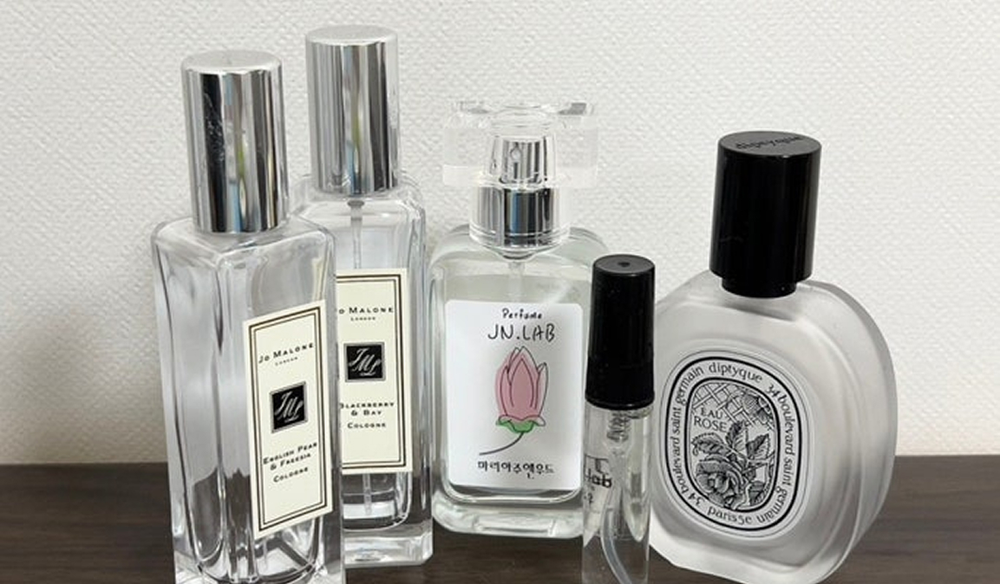

안녕하세요 ! 요즘 날씨가 확실히 선선해지면서, 향수도 가을 느낌 나게 바꿔보고 싶다는 생각이 들었어요. 여름에는 가볍고 시원한 시트러스 계열을 자주 뿌렸는데, 이제는 좀 더 따뜻하고 포근한 향이 끌리더라구요.
근데 그렇다고 너무 묵직하거나 스모키한 건 좀 부담스러워서... 은은하면서도 존재감 있는, 그런 향을 찾고 있어요. 약간 우디 베이스인데 달콤한 잔향이 남는 향? 그런 느낌이 좋아요. 대표적으로 샌달우드나 바닐라, 머스크 같은 향들이 섞인 향수를 떠올리고 있는데, 혹시 여러분은 요즘 어떤 가을 향수 쓰고 계신가요?
가볍게 데일리로 쓰기 좋은 향이든, 조금 더 감성적인 향이든 다 좋아요! 이런 계열 좋아하신다면 꼭 추천 좀 부탁드려요 :) 요즘 향수 매장 가도 뭐가 뭔지 너무 많아서, 진짜 향덕분들 조언이 절실합니다 😂

향수러버
저는 최근에 조말론 우드 세이지 앤 씨 솔트 코롱 쓰는데 가볍고 청량한 느낌이 나서 좋더라구요. 무겁지 않아서 데일리로도 무난해요.
21분 · 답글달기 · 신고 · ♥ 좋아요 5개
zzz1213
저는 딥디크 Tam Dao 좋아해요. 우디하면서 은은하게 달콤한 느낌이라 가을 느낌 딱이에요.
39분 · 답글달기 · 신고 · ♥ 좋아요 2개
가을녀자
혹시 좀 달달한 쪽으로도 추천받고 싶은가요? 저는 ‘메종마르지엘라 레플리카 바이 더 파이어플레이스’ 쓰는데, 약간 구수하면서 달콤한 느낌이라 가을 밤에 딱이에요.